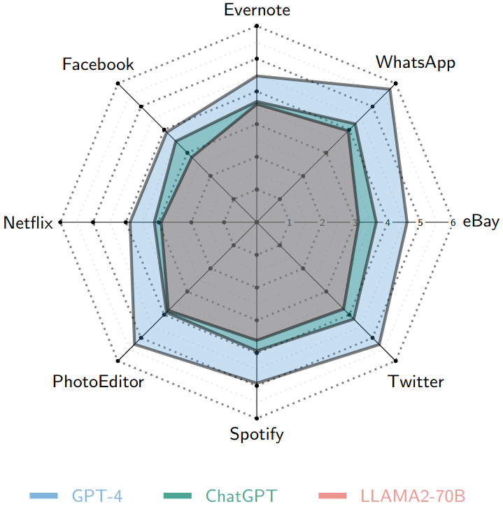
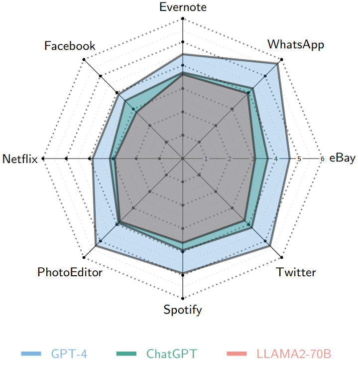

Abstract
Analyzing user reviews for sentiment towards app features can provide valuable insights into users' perceptions of app functionality and their evolving needs. Given the volume of user reviews received daily, an automated mechanism to generate feature-level sentiment summaries of user reviews is needed. Recent advances in Large Language Models (LLMs) such as ChatGPT have shown impressive performance on several new tasks without updating the model's parameters i.e., using zero or a few labeled examples. Despite these advancements, LLMs’ capabilities to perform feature-specific sentiment analysis of user reviews remain unexplored. This study compares the performance of state-of-the-art LLMs, including GPT-4, ChatGPT, and LLama-2-chat variants, for extracting app features and associated sentiments under 0-shot, 1-shot, and 5-shot scenarios. Results indicate the best-performing GPT-4 model outperforms rule-based approaches by 23.6% in f1-score with zero-shot feature extraction; 5-shot further improving it by 6%. GPT-4 achieves a 74% f1-score for predicting positive sentiment towards correctly predicted app features, with 5-shot enhancing it by 7%. Our study suggests that LLM models are promising for generating feature-specific sentiment summaries of user reviews.
Quantitative Results
GPT-4 is the top-performing model for extracting app features, surpassing rule-based approaches by 23.6% in f1-score with the exact matching strategy. However, the fine-tuned BERT(*) model still outperforms GPT-4 by 14% in the f1-score. In the 5-shot scenario, both GPT-4 and Llama-2-70B show further improvements of 7% and 6% in f1-score, respectively. Our evaluation study has showcased the encouraging performance of LLMs in extracting fine-grained information from user feedback. This capability of LLMs holds promise in assisting developers with their software maintenance and evolution activities by analyzing users’ opinions.
Second best result (in Blue) and Third best result (in yellow).
Qualitative Results
The analysis reveals, in 5-shot f1 performance of GPT-4, ChatGPT, LLama-2-70B Chat for individual app, that LLM models exhibit varying performance across different applications. Specifically, LLM models demonstrate improved performance in extracting features from user reviews of applications such as "WhatsApp," "Twitter," and "PhotoEditor". 

Notably, (Left) All models, except LLama-7B, demonstrate improved performance with the Long-prompt for predicting neutral sentiment. (Right) all models display a low f1-score for the "Netflix" application. This observed trend may be associated with the proportion of review data from each application employed in training or fine-tuning these models.
The result shows feature-sentiment pairs extracted by LLama-2-70B, ChatGPT, and GPT-4 models from user reviews Human-labeled features in reviews are highlighted and enclosed in brackets. POS, NEU, and NEG show true sentiment polarity labels in reviews. The ✗ symbol indicates an incorrect prediction, while the ✓symbol indicates a correct prediction using the partial match 2 evaluation strategy.